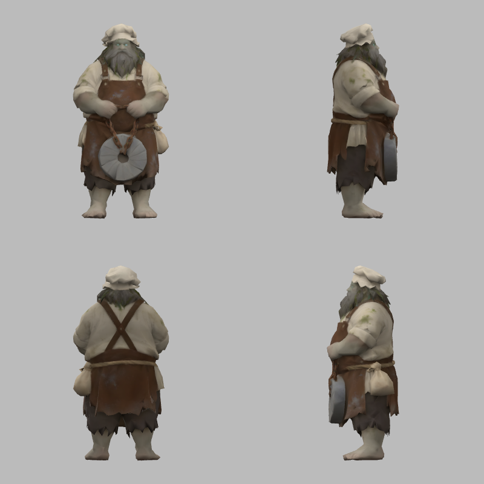

The Sunken Mill's bruiser: your export, with a skeleton and nine moves added by hand. A stout, grey-green drowned miller in a flour-stained shirt, a torn leather apron and a cap, weed in his beard, a flour sack tied at his hip and a millstone hanging on a chain from both hands. He plods straight at you; up close he plants his feet, pays out the chain and whirls the stone round him inside an Ember ring, and from further off he lobs a sodden flour sack onto you. Press a move to watch him; the numbers under the page come from the model file.
Idle or Walk sets what he does between attacks, and Going turns him on the spot. Flail sweep plays the game's three sweeps in turn (the flat whirl, the reverse low, then the overhead slam), each in its own 2.2 u Ember ring with the hero stand-in 1.6 u away inside it. Sack toss plays the game's three throws in turn (overarm, side-arm, the heave), each lobbed onto the stand-in 4.5 u away. An action repeats until you press it again. Hurt plays on top of anything. Death drops him: press it again and he spawns back. The bar names the part of the move that is playing, in the game's own words where it has them.

It came through as one piece: a heavy, round-bellied miller standing square on bare feet, both hands on his belly gripping a short chain with a grooved millstone hanging from it in front of his apron. A baker's cap, a long grey beard with weed in it, a stained cream shirt with rolled sleeves, a leather apron torn at the hem with crossed straps at the back, a rope belt with a small flour sack at his left hip, and dark ragged trousers.
| Move | What it does | Timing |
|---|---|---|
| Idle | He breathes heavily, the stone swinging a little on its chain, and looks one way, then the other. | Mine: a 4.8 s loop. |
| Walk | A heavy plod on his short legs: feet set wide and straight, the hips rolling on each step, leaning into the travel, the stone swinging forward and back. | Game: 1.1 u/s. The step is mine: short and quick for his short legs, 0.46 s a cycle. |
| Turn left, turn right | Shuffles round on the spot, the stone swinging out with the turn. | 144° a second (mine: the game turns him at once). |
| Flail sweep | The game's three sweeps, on its own key poses and its stone track. Through the ring telegraph he plants, pays out the chain and spins the stone up round him through whole turns, faster and faster, the body wound against the spin. The flat whirl sweeps level across the front to his right; the reverse spins the other way, low, and sweeps to his left; the slam hauls the stone up behind him once and brings it over the top into the floor in front. The sweep takes the last 2.5 frames and lands on the resolve (13 to every hero in the ring); the stone swings on round and comes back to hang as he hauls the chain in. | Game: the 60-tick ring (1 s) each sweep; strike 2.5 frames, hold 3, snap 3, settle 9 (at 30 a second); two turns over the coil for the first two, one for the slam. The 0.25 s rest between sweeps is the game's lab rest (the game waits 200 ticks). |
| Sack toss | He reaches to his hip for a sack, then the game's throw: a 1.5-frame gather, the throw with the torso turned into it and the sack away on the contact, held, then the follow-through. Overarm, side-arm, then a heave over the head. The sack flies 60 ticks onto the hero, an Ember ring marking where it lands, and bursts into a paste of wet flour. | Game: unwarned; gather 1.5 frames, strike 2.5, hold 3, snap 3, settle 9; the flight 60 ticks. The 0.35 s reach to the hip is mine, so the throw can be seen. |
| Hurt | He rocks back, the head snapping up and the stone jolting on its chain. Plays on top of any move. | 0.4 s |
| Spawn | Grows in and straightens with a heave, the stone swinging. | Game: grow in 7 frames, about 10% over. The rest is mine. |
| Death | Struck, he rocks back and the stone drops from his hands to the floor; his knees give and he sits down hard, then falls back flat and lies still. | Mine: 2.2 s, then he stays down. The game pops every foe where it is. |
| What was measured, on every frame of every move | Result |
|---|---|
| Feet sliding while planted (walk, both turns, the sweeps and tosses) | 0 mm |
| Loops that jump when they restart (idle, walk, both turns) | 0 |
| The stone and the floor | Kept a stone's radius up on every frame: the chain lifts it rather than burying it, the slam included. |
| Anything else into the floor | A foot dips up to 11 mm in the deepest crouch of the slam; a shin up to 18 mm as he sits down in the death. |
These numbers come from the model file. I checked the poses as still frames only: the cloud machine cannot play the page at full speed, so the whirl and the throws are yours to judge.